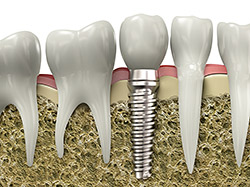
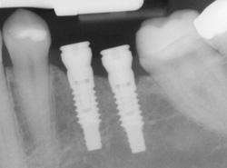

People are living longer than ever, and while regular brushing, flossing, and checkups allow many of us to maintain our natural smiles for a lifetime, sometimes our teeth just can't keep up. If you've lost a tooth (or a few teeth) due to injury or disease, dental implants can rejuvenate both your smile and your oral health.
An implant is a synthetic tooth root in the shape of a post that is surgically placed into the jawbone. The “root” is usually made of titanium: the same material used in many replacement hips and knees, and a metal that is well-suited to pairing with human bone. A replacement tooth is then fixed to the post. The tooth can be either permanently attached or removable. Permanent teeth are more stable and feel more like natural teeth.
The ideal candidate for implants is a non-smoker who has good oral health, including a sufficient amount of bone in the jaw, and healthy gums with no sign of gum disease.
Implants are versatile. If you are only missing one tooth, one implant plus one replacement tooth will do the trick. If you are missing several teeth in a row, a few strategically placed implants can support a permanent bridge (a set of replacement teeth). Similarly, if you have lost all of your teeth, a full bridge or full denture can be permanently fixed in your mouth with a strategic number of implants.
Conventional bridges and dentures are not fixed to the bone, and can therefore be unstable. This can make it difficult to eat or smile with confidence. Implants not only look more natural, but feel and act more like normal teeth, with a stronger biting force. And because they don't directly rely on neighboring teeth for support, implants don't compromise the health of your natural teeth. In fact, bridges are only expected to last seven to ten years, even less with root canals, whereas implants will typically last a lifetime.

Consider your replacement teeth to be the same as natural teeth. They require the same daily brushing and flossing, and the same amount of regular checkups. Just like your natural teeth, the better you take care of your replacements, the longer they will last.
After the loss of upper back teeth, your sinuses may enlarge in size. Before new implants replace the lost teeth, a sinus lift augmentation or graft relocates the sinus cavity into its original position and replaces the bone that has been lost as a result of the enlarged sinus. This new bone graft typically takes nine to 12 months to heal before the dental implants can be placed into the grafted bone.
Occasionally, ideal areas where dental implants are to be placed do not have sufficient bone quantity to predictably place the implants. In these cases, it is often necessary to "borrow" bone from another area of your mouth to graft into the deficient area. Often the area of choice is from the chin or in the back of the jaw where your wisdom teeth used to be.
When a tooth needs to be removed due to infection, it is not uncommon to have bone loss around the infected tooth. In these cases, various types of bone grafting can be done at the same time the tooth is removed to facilitate the placement of a dental implant at a later date.
We have special 3D software that allows us to evaluate your bone quality, bone quantity, and bone location for the best possible placement of your dental implants. This also allows us to work closely and smoothly with your restorative dentist to ensure an ideal result for your dental implants.
Once your dental implant restoration is completed, it is important to keep the area clean and free of infection. Dental implants can accumulate plaque and tartar just as teeth can. Whether you have just one tooth replaced by an implant or several, professional cleanings will be necessary to keep your implants healthy. The time interval for these professional cleanings will be determined by your individual needs.
Back to to topUsing the most advanced dental technology possible is just as important as staying up-to-date on the latest treatment techniques. Because our practice is dedicated to providing you with the safest and most convenient treatment options available, we utilize advanced digital X-ray technology in our office.
Digital X-rays provide several advanced imaging options designed to save time, provide clearer dental photos, and expose patients to less radiation than traditional X-ray technology.
Our practice is focused on making your dental experience as comfortable as possible. At your next appointment, we'll be happy to answer any questions you may have.
You know the importance of prevention when it comes to your dental health, and we’re always looking for new, improved ways to help you achieve a healthy smile for life. While X-rays provide valuable information, they don’t give a complete view of everything that is going on inside your mouth. With the use of an intraoral camera, we can see every aspect of your teeth and mouth with incredible detail, uncovering cracked teeth, plaque deposits, cavities next to fillings, and excessive wear. When we can discover oral problems early on, your treatment is much less invasive and much more cost effective.
Our intraoral camera is small, about the size of the mirror we use during your regular hygiene appointments. You probably wouldn’t even notice we’re using it, except that with the intraoral camera, you have the opportunity to see everything we see on a monitor. This is a great tool to help you become more informed about your dental health, as it gives you a clear understanding of your teeth’s condition, and it allows you to make a more informed decision regarding your treatment options.
Back to to topOur office is not only dedicated to your smile, we're also dedicated to your overall wellness. We take a holistic approach to your dental care, which includes an oral cancer screening as a part of your regular exam. Like many kinds of cancer, oral cancer can be life-threatening if not diagnosed and treated early.
We have the skills and tools to ensure that early signs and symptoms of oral cancer and pre-cancerous conditions are identified. While these symptoms may be caused by other, less serious problems, it is very important to visit our office to rule out the possibility of oral cancer. The most common symptoms of oral cancer include:
Our team is trained in a simple, quick screening that involves an examination of your oral cavity as a whole, and not just your teeth, to detect cancerous and precancerous conditions. Besides a visual examination of your mouth, we will also feel the tissue of your mouth and throat to detect any abnormalities. If we find an area of concern, we may perform a simple test, such as a brush test, which collects cells from a suspicious lesion in the mouth to be sent to a laboratory for analysis. If this test comes back atypical or positive, we may recommend a biopsy.
Aside from receiving an oral cancer screening during your checkup at our office, there are many things you can do to help prevent oral cancer.
A beautiful smile is an important asset. Not only do white teeth enhance your smile, but they make you feel more confident about our appearance. You’ll actually look younger and feel better in just 20 minutes! You deserve to have a beautiful and exceptional smile. We can help you achieve a whiter smile and a more confident you, in just 20 minutes.
Sinsational Smile® uses a fast and effective technology with our patented pre-filled silicone tray. This allows the jaw to remain relaxed and the person comfortable throughout the 20 minute procedure. This procedure includes the use of an LED accelerating light that helps to activate the gel's whitening ingredients at a faster rate, resulting in a brighter smile and whiter teeth in less time. As part of your procedure, you'll also receive a take-home maintenance pen to further extend your new brighter smile!
The number of treatments necessary will vary based on your need and color preference. On-going whitening treatments may be repeated on a scheduled basis to maintain and rejuvenate your smile. Though most people will notice a big difference after only one treatment, additional treatments could be necessary to achieve the sparkling white teeth you desire.
Whitening durations vary from person to person. Certain food and drinks as well as other factors (i.e. tobacco, medications, age) can all affect the longevity of your results, especially if between visits you continue to use the whitening pen. This easy to use pen can be used anywhere and takes only a couple of minutes to help you keep your teeth looking their whitest.
Back to to topAre you drowsy during the day with no explanation? Do you snore loudly or wake up breathless in the middle of the night? If you're experiencing any of these symptoms, you may be one of more than 12 million Americans who are affected by sleep apnea.
Sleep apnea is a condition in which your breathing stops periodically during sleep, as many as 20-30 times per hour. Each time you stop breathing in your sleep, the resulting lack of oxygen alerts your brain, which temporarily wakes you up to restart proper breathing. Since the time spent awake is so brief, most people with sleep apnea don't remember it, and many believe they are getting a good night's sleep when, in fact, they are not. The constant wake-sleep, wake-sleep cycle prevents those with sleep apnea from achieving deep sleep, resulting in a constant drowsy feeling during the day.
The following symptoms can indicate the presence of sleep apnea. If you notice one or more of these, contact our practice.
There are three categories of sleep apnea. The most common is called obstructive sleep apnea (OSA), and occurs due to a physical blockage, usually the collapsing of the soft tissue in the back of the throat. Less common is central sleep apnea (CSA), in which breathing stops because the muscles involved don't receive the proper signal from the brain. And some people suffer from "mixed" or "complex" sleep apnea, which is a combination of obstructive and central.
Obstructive sleep apnea is more common in males than females, and more common in older adults (40+) than younger adults and children. However, anyone — regardless of gender or age — can suffer from sleep apnea. Other risk factors include obesity, smoking, drinking, use of sedatives or tranquilizers, and family history. Central sleep apnea strikes most often in people with heart disorders, neuromuscular disorders, strokes, or brain tumors.
Sleep apnea is considered a serious medical problem and if left untreated it can lead to high blood pressure, increasing the risk of heart failure and stroke. The ongoing state of fatigue caused by sleep apnea can lead to problems at work or school, as well as danger when driving or operating heavy machinery. Sleep apnea can also cause complications with medication or surgery; sedation by anesthesia can be risky, as can lying flat in bed after an operation. If you know or suspect you suffer from sleep apnea, let your family doctor know before taking prescribed medication or having surgery.
Treatments for sleep apnea depend on the severity of each individual case, and the type of apnea. Basic treatment can be behavioral — for instance, patients are instructed to lose weight, stop smoking, or sleep on their sides instead of on their backs. Beyond that, oral devices can be used to position the mouth in such a way that prevents throat blockage. In more severe cases, surgery may be the best option.
Contact our practice, and we can refer you to a sleep apnea specialist. The specialist may recommend a sleep study to diagnose the precise extent of the problem, and can prescribe appropriate treatment. Depending on your situation, treatment may involve an oral device that we can custom-create for you.
Back to to topWhile snoring is a common problem for many people, it can also be a sign of other major health complications. It is estimated that more than 80 million people in North America snore while sleeping, which not only affects the quality of sleep of the person snoring, but also the quality of sleep of their loved ones and other family members. Luckily, there is a way to treat chronic snoring.
Snoring can be the result of several factors. Typically, snoring is caused by the relaxing of the muscles and soft tissues in the throat and mouth, making the air passage smaller. The decrease in space through the airway makes it harder for each breath to get through, and when it does get through, it moves over the soft tissues in the mouth and throat and causes a vibration that results in the snoring sound. Other causes of snoring may include:
If you snore at night, then a mandibular advancement device (MAD) may represent a solution and a better night's sleep! The MAD is a specially designed dental device that gently helps keep the lower jaw, or mandible, in a forward position, increasing the space between the airway passage and helping you breathe better so you can get a full, quiet night's sleep.
Some devices also stop the tongue from falling back over your windpipe. Your dentist will fit these special appliances to meet your individual condition.
The answer is simple — YES! A mandibular advancement device is made to be comfortable, so that you can sleep without even noticing you're wearing it. It does not prevent you from breathing with your mouth open and will even eliminate snoring for patients with sinus congestion or allergies. You may experience some slight stiffness of the jaw for the first few mornings after wearing the device, but this feeling is only temporary, and will go away after you wake up and remove the device.
To learn more about a mandibular advancement device, contact our practice and schedule an appointment and consultation.
Back to to top